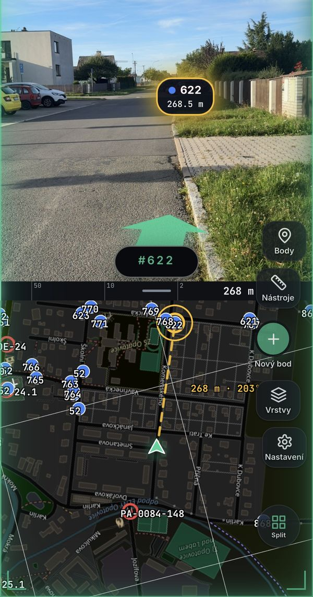
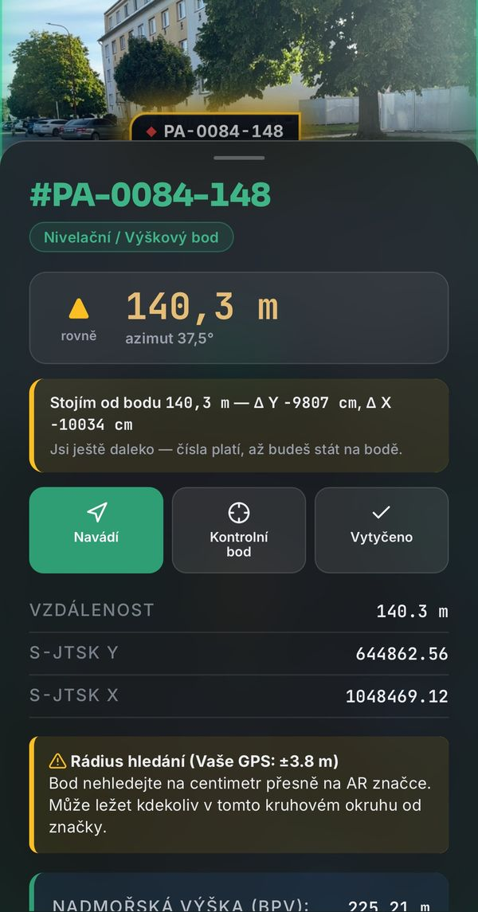
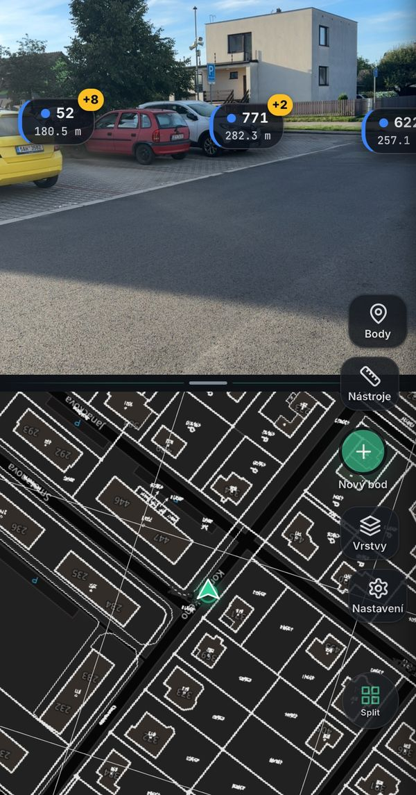
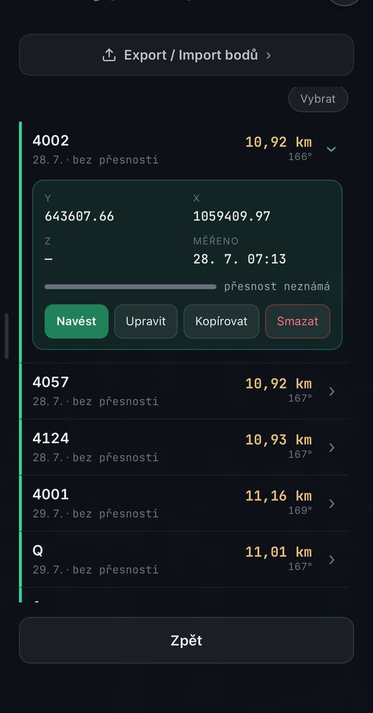
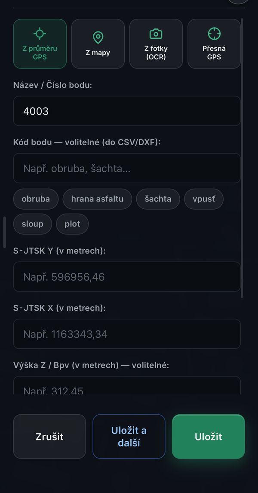

QTRIG je terénní pomůcka pro geodety. Zvedneš telefon, namíříš ho před sebe a v obraze kamery uvidíš, kde jsou trigonometrické, zhušťovací, nivelační i podrobné body ČÚZK — a kam máš jít. Bez papírových náčrtů, bez hledání v křoví.

Co appka umí
Všechno, co s telefonem v terénu dává smysl — a všechno z toho jde ven v CSV nebo DXF do kanceláře.
Body bodového pole ČÚZK přímo v obraze kamery se vzdáleností a směrem. Karta bodu s Y, X, výškou Bpv, oficiálním místopisným náčrtem ČÚZK a rádiem, ve kterém bod hledat. Navádění šipkou až na místo.

Základní mapa, ortofoto a katastrální hranice s parcelními čísly. Klik do parcely ukáže výměru, druh pozemku, budovu, BPEJ i chráněná území z RÚIAN.
Nový bod z průměru GPS, klepnutím do mapy nebo přečtením souřadnic z fotky. Kódy bodů (obruba, šachta, vpusť…), zakázky s poznámkami a fotkami, import seznamu souřadnic.
Vytyčování bodů, přímek a lomené osy se staničením a odchylkou. Oměrné, plochy, protínání, rajón, volné stanovisko, kalkulačka s postupem výpočtu, metr v kameře a libela.
Stav GPS, družice a odhad chyby pořád na obrazovce. Sekce Přesné měření: oprava GPS podle známého bodu, z mapy, chůzí po hraně, dvoutelefonní DGPS a kontrolní dvojí měření.
Bez signálu, šetří baterii, čitelná na slunci, jednou rukou i v rukavicích. Režim levé ruky, gesta jako zkratky, režim pro slabší telefon, na Androidu Zpět zavírá okna.
Jak to funguje
Žádné zakládání projektu, žádný import. Body ČÚZK se stáhnou samy podle toho, kde stojíš.
Appka zjistí polohu, stáhne bodové pole ČÚZK z okolí a ukáže ho v mapě. Okolí zakázky si můžeš stáhnout dopředu na wi-fi.
V obraze kamery vidíš značky bodů se vzdáleností a směrem. Klepneš na bod → karta se souřadnicemi, výškou a náčrtem.
Šipka a mapa s trasou tě navedou k bodu; na místě appka řekne, v jakém kruhu bod hledat. Kontrolu nebo nový bod uložíš dvěma klepnutími.
Ukázky
Posuň do strany.



Základ a Pro
Stačí na běžné dohledání bodu i práci se zakázkou. Pro přidává nástroje pro firmu a náročnější výpočty.
Bez reklam, bez limitu bodů, napořád.
Do konce roku 2026 zdarma — požádáš přímo z appky.
Přesnost
QTRIG je orientační pomůcka. Přesnost odpovídá GPS a kompasu v telefonu — appka to nikde neschovává, odhad chyby máš pořád na obrazovce a umí z telefonu vytěžit maximum.
| Situace | Typická chyba |
|---|---|
| Jeden fix GPS, volný obzor | ±3–5 m |
| Průměr GPS 1–2 min na místě | ±0,5–1 m |
| Oprava podle známého bodu, z mapy nebo chůzí po hraně | ±0,3–0,5 m krátce, v okolí |
| Dvoutelefonní DGPS (do 150 m od základny) | ±0,5 m vůči sobě |
| Pod stromy, u zdí, mezi domy | metry — odrazy signálu |
Dohledání bodu v terénu, orientační zaměření, kontrola „sedí to zhruba“, náčrt situace, evidence bodů se souřadnicemi, podklad pro kancelář.
Geometrický plán, vytyčení hranice pozemku, cokoli, kde jde o centimetry — na to je potřeba geodetická GNSS aparatura nebo totální stanice a úředně oprávněný zeměměřický inženýr.
Instalace
QTRIG je webová aplikace (PWA). Otevřeš adresu, přidáš si ji na plochu — a pak se chová jako běžná appka a funguje i bez signálu.
K používání je potřeba účet (jméno a heslo, bez e-mailu) — založíš ho při prvním spuštění. Účet jde kdykoli smazat přímo v appce.
Otázky
Z otevřených dat ČÚZK (Český úřad zeměměřický a katastrální): bodová pole, katastrální mapa, ortofoto, RÚIAN a výškopis DMR 5G. Data se stahují přímo z jejich serverů, appka je nikam nekopíruje.
Ano. Okolí zakázky (mapa, katastr, body) si stáhneš dopředu na wi-fi, jde stáhnout i celý okres nebo kraj. Vlastní body a zakázky jsou vždy v telefonu; bez signálu nejde jen dotažení nových dat ČÚZK.
Protože GPS v telefonu měří na metry — malá anténa, odrazy od budov. Appka to poctivě ukazuje a nabízí, jak z toho vytěžit maximum: průměrování, oprava podle známého bodu nebo z mapy, kalibrace chůzí po hraně, dvoutelefonní DGPS. Na centimetry to ale není a ani nebude.
Jen údaje účtu, anonymní záznamy užívání a hlášení chyb. Poloha i obraz kamery se zpracovávají jen v telefonu. Žádná reklama, žádné sledování. Podrobně v zásadách ochrany soukromí.
Mapa, vlastní body, vytyčování a výpočty ano — appka pozná zemi z GPS a přepne souřadnicový systém (Slovensko, Polsko…). Bodové pole a katastr jsou data ČÚZK, takže mimo ČR se v kameře ukážou jen tvoje body.
Přímo v appce: Nastavení → Napsat autorovi. Zpráva odejde i s verzí appky a typem telefonu, takže se chyba hledá snáz.
Bez registrace e-mailem, bez platby, bez instalace z obchodu. Za minutu vidíš první bod v kameře.